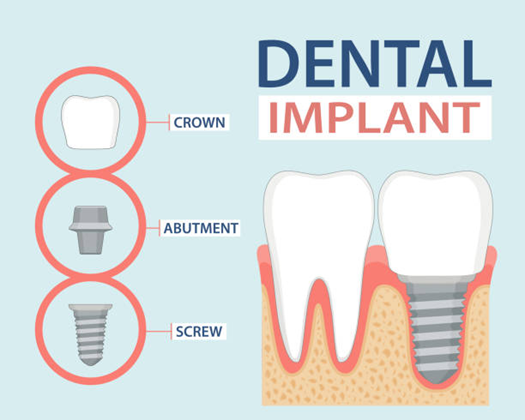
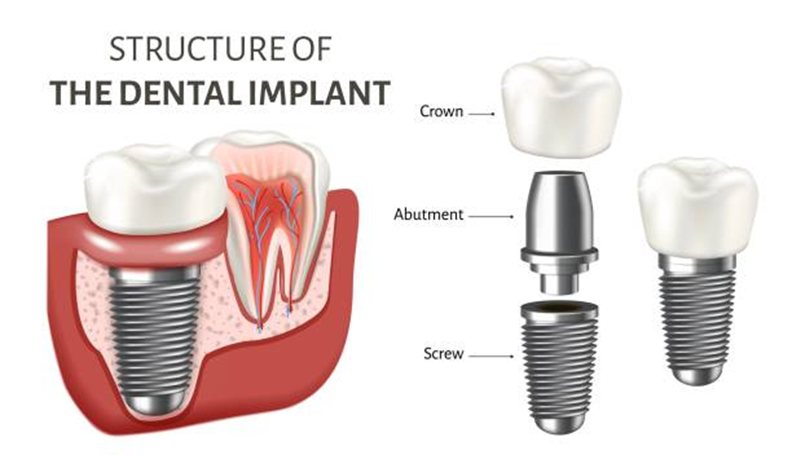

Dental Implants
The gold standard for replacing missing teeth with natural-looking, lifelong results.

Dental Implants
A Natural Smile
A Dental implant (Artificial tooth root) is the best treatment known to replace a lost tooth. An implant is a screw-like material made of titanium that replaces the root portion of a natural tooth. It is placed inside your jawbone by surgery over which crowns, dentures or bridges are fixed. If placed under proper conditions and further maintained diligently, an implant can last for a lifetime.
- Replace one or more teeth without altering the adjacent teeth like dental bridges
- Dental Impants prevent jaw bone loss or facial sagging due to missing tooth
- Dental implants provide permanent and stable tooth replacement
Dental Implants are Placed
Step 1
Thorough clinical examination is made and Dental X-rays are taken and if required a CBCT scan will be advised.
Step 2
Implant placement is carried out as minor oral surgery by raising a flap or flapless (key hole) after numbing the area by local aesthesia.
Step 3
Implant is placed in the jaw and is left to bond with the bone and to heal completely. This takes minimum of 3 to 4 months.
Step 4
In the meanwhile, temporary crowns or dentures may be provided.
Step 5
Once Osseo integration (Bone-Implant junction) is formed, the permanent crown or Bridge which is to be replaced is fitted over the Implant.
Step 6
After Implant placement post operative care and follow up is must. By maintaining good oral hygiene and having regular check-up a good integrated Dental Implant can lasts a lifetime.
Types of Implant Solutions


Digital Guided
Implant Surgery
Keyhole dental implants or flapless implants will be performed where ever possible. Keyhole dental implants are a minimally invasive, high-precision technique where implants are inserted through a small, punched hole in the gum without needing large incisions or stitches. This method reduces post-operative pain, discomfort, and recovery time, allowing for faster, often same-day, function. .
98%
Success Rate
3D
Guided Precision

Key Aspects of Keyhole Implants

Ready for your transformation?
Book a consultation with our Implantologists at Krishnagiri or Chennai.